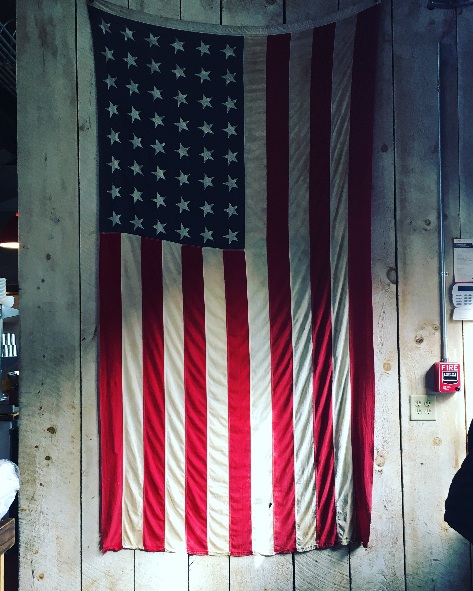
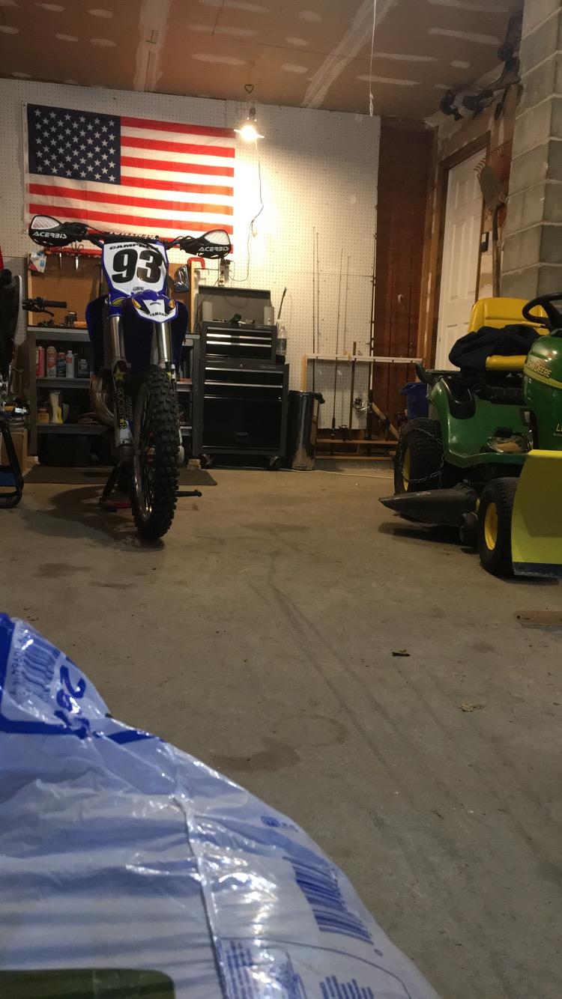
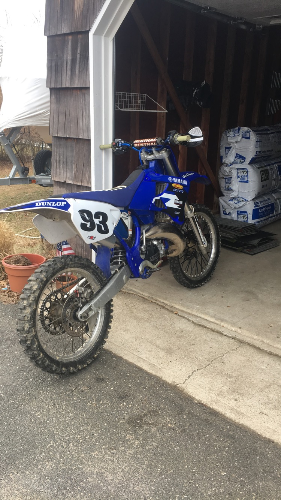
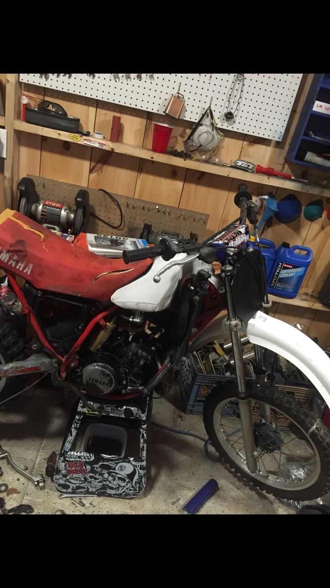
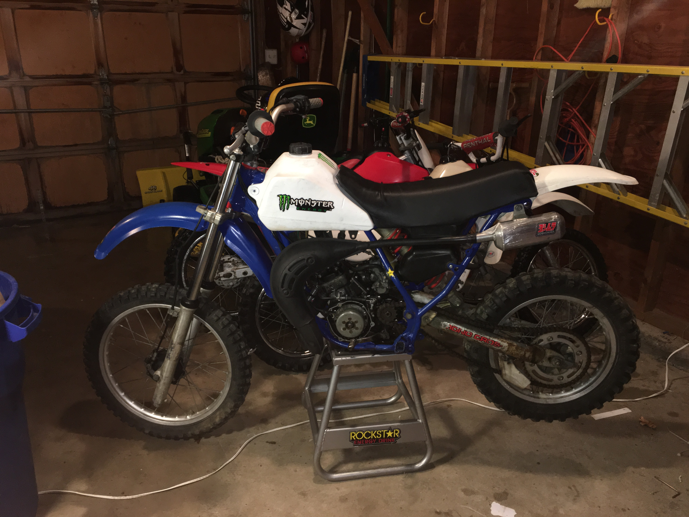

Hello, my name is Ben Campbell. Welcome to my website.
I am 14 years old and live on Long Island. I go to The Ross School in East Hampton. My main interest is dirtbiking and working on them. I made this website for a project in innovation lab. Innovation Lab is a course in the Ross School. For three weeks I will be taking part in an Ilab couse in which I and many other students will learn skills in technology and engineering.
 One of the projects I have done was restoring an old dirtbike. It was a 1984 yz80. I took it down to the frame and restored all of it including the motor. I ended up selling the bike for more than double the cost i bough it for. Below are the before and after pictures.
 